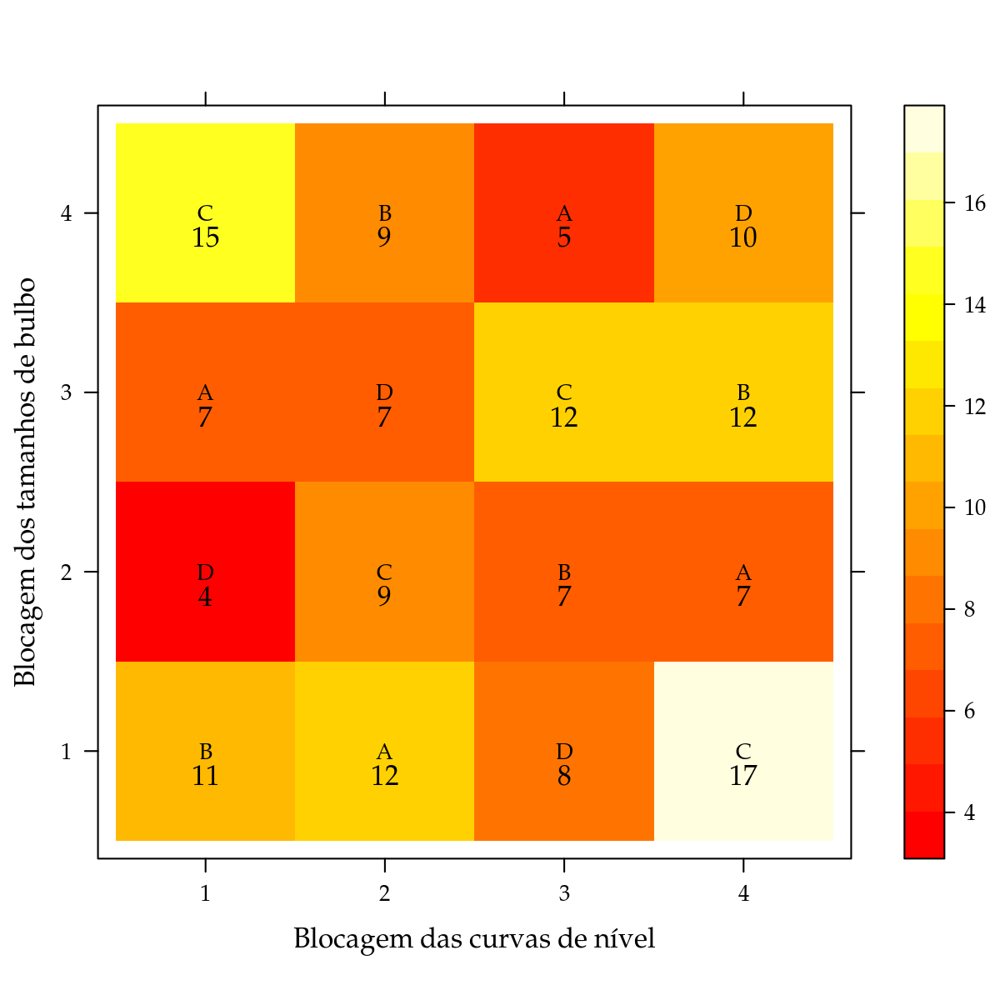
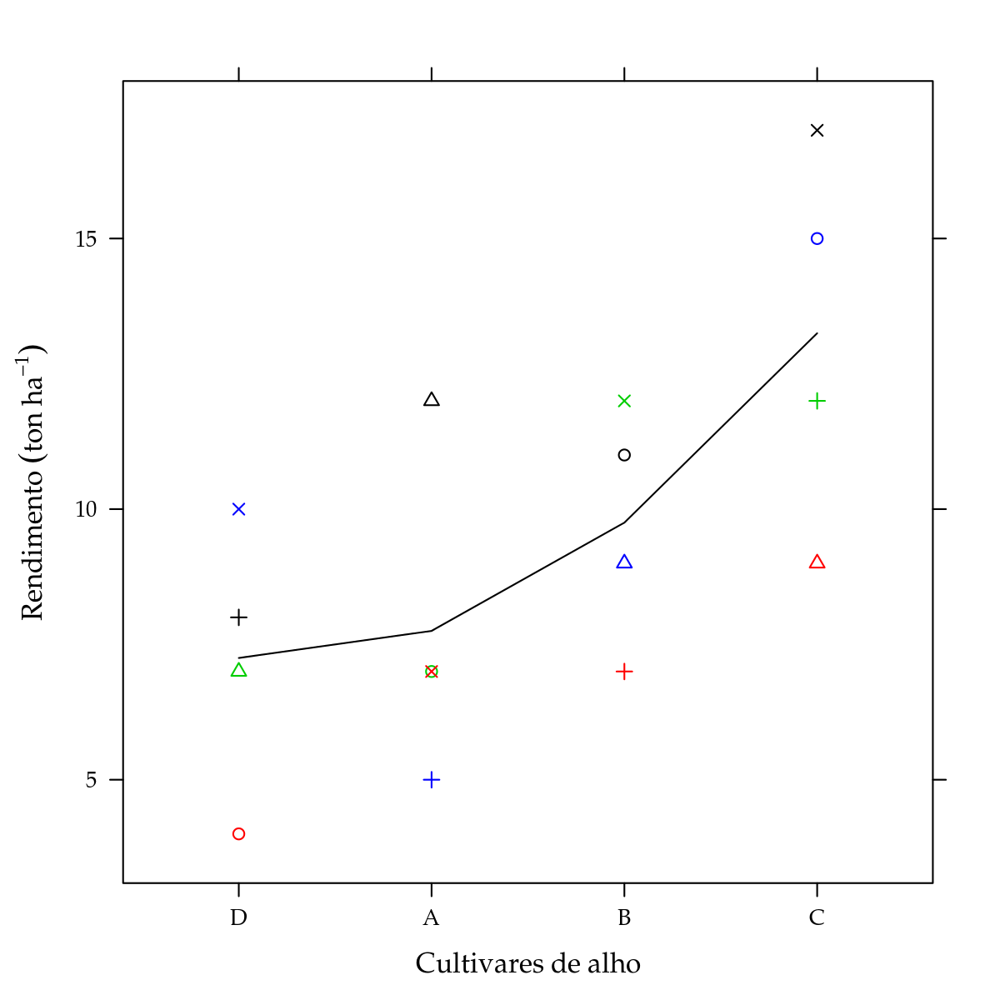
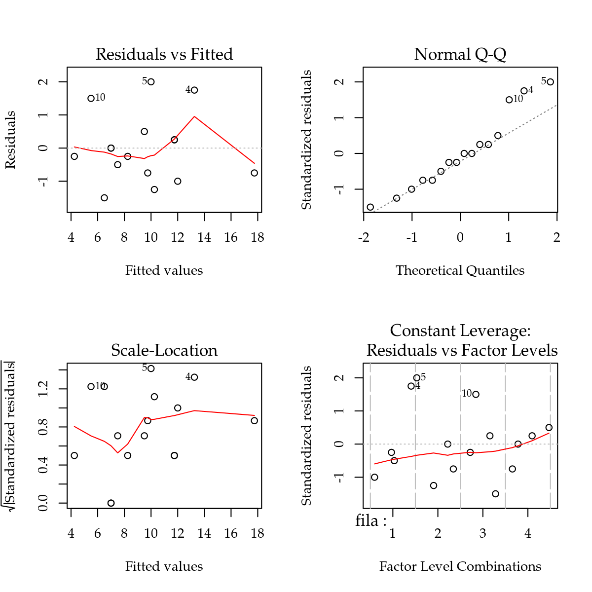
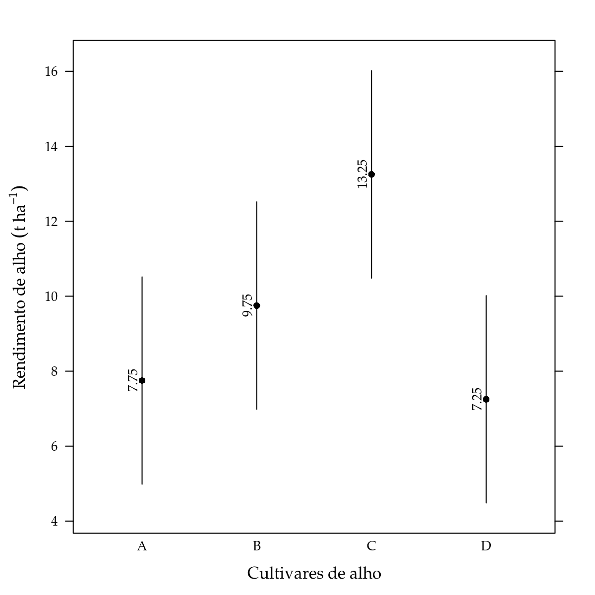

Para exemplificação da análise de um experimento em delineamento quadrado latino (DQL), vamos considerar o conjunto de dados StorckEg2.3.5.
library(labestData)
# Selecione a keyword DQL para filtrar os experimentos em DQL.
# labestDataView()help(StorckEg2.3.5, help_type = "html")Nesse experimento estudou-se o rendimento (resposta) de quatro cultivares de alho. O experimento foi instalado em delineamento quadrado latino para ser feito controle local em duas dimensões. A blocagem nas linhas foi em razão da heterogeneidade da fertilidade entre as curvas de nível (cada curva igual a uma linha) e a blocagem nas colunas foi devido à heterogeneidade entre os tamanhos dos bulbos de alho, portanto, em cada coluna foi usado uma classe de tamanho de bulbos.
#-----------------------------------------------------------------------
# Ler a partir do repositório do labestData.
# url <- paste0("https://gitlab.c3sl.ufpr.br/pet-estatistica",
# "/labestData/raw/devel/data-raw/StorckEg2.3.5.txt")
#
# StorckEg2.3.5 <- read.table(file = url, sep = "\t", header = TRUE)
#-----------------------------------------------------------------------
# Análise exploratória.
# Estrutura do objeto.
str(StorckEg2.3.5)## 'data.frame': 16 obs. of 4 variables:
## $ fila : Factor w/ 4 levels "1","2","3","4": 1 1 1 1 2 2 2 2 3 3 ...
## $ colun: Factor w/ 4 levels "1","2","3","4": 1 2 3 4 1 2 3 4 1 2 ...
## $ cult : Factor w/ 4 levels "A","B","C","D": 2 4 1 3 1 3 4 2 4 2 ...
## $ rend : int 11 4 7 15 12 9 7 9 8 7 ...# Tabela de frequência para os tratamentos.
xtabs(~cult, data = StorckEg2.3.5)## cult
## A B C D
## 4 4 4 4# Dados desempilhados.
unstack(x = StorckEg2.3.5, form = rend ~ cult)## A B C D
## 1 7 11 15 4
## 2 12 9 9 7
## 3 5 7 12 8
## 4 7 12 17 10library(reshape)
# Croqui do delineamento (em texto).
cast(StorckEg2.3.5, fila ~ colun, value = "cult")## fila 1 2 3 4
## 1 1 B D A C
## 2 2 A C D B
## 3 3 D B C A
## 4 4 C A B D# Croqui do delineamento (em gráfico).
levelplot(rend ~ fila + colun,
data = StorckEg2.3.5, aspect = "iso",
col.regions = heat.colors,
xlab = "Blocagem das curvas de nível",
ylab = "Blocagem dos tamanhos de bulbo",
panel = function(x, y, z, subscripts, ...) {
panel.levelplot(x, y, z, subscripts = subscripts, ...)
panel.text(x, y, StorckEg2.3.5$cult[subscripts],
cex = 0.8)
panel.text(x, y, z, pos = 1)
})
library(lattice)
# Diagrama de dispersão dos valores. Cores identificam as colunas e
# símbolos identificam as filas.
xyplot(rend ~ reorder(cult, rend),
data = StorckEg2.3.5,
pch = StorckEg2.3.5$fila,
col = StorckEg2.3.5$colun,
xlab = "Cultivares de alho",
ylab = expression("Rendimento" ~ (ton ~ ha^{-1})),
type = c("p", "a"))
Conforme a análise preliminar, esse quadrado latino é de dimensão 4.
No gráfico de dispersão, ordenamos as cultivares pela média amostral e as observações de uma mesma fila e coluna foram identificadas com símbolos e cores, respectivamente. Pelo diagrama de dispersão, os pontos em preto tem a tendência de seres os mais altos enquanto que os vermelhos são os mais baixos. Já para os símbolos, a cruz diagonal (\(\times\)) apresenta rendimentos mais elevados e a cruz vertical (\(+\)) rendimentos menores.
A variável resposta rendimento, nesse experimento, está representada em toneladas por hectare. Apesar de ser uma variável contínua, todos os valores observados são inteiros. Dificilmente o instrumento de medida usado no experimento tenha uma precisão tão pequena. Provavelmente os resultados tenham maior precisão mas foram arredondados para inteiros para facilitar a execução da análise sem computador.
O modelo estatístico correspondente ao delineamento quadrado latino é
\[ \begin{aligned} Y \mid \text{fila, colun, cult} &\,\sim \text{Normal}(\mu_{ijk}, \sigma^2) \newline \mu_{ijk} &= \mu + \alpha_{i} + \gamma_{j} + \tau_{k}, \end{aligned} \]
em que \(Y\) é a variável resposta, \(\alpha_{i}\) é o efeito da fila \(i\), \(\gamma_j\) é o efeito da coluna \(j\), \(\tau_k\) é o efeito da cultivar \(k\), \(\mu\) é a média de \(Y\) na ausência do efeito de todos os termos indexados e \(\sigma^2\) é a variância das observações ao redor das suas respectivas médias. Note que o parâmetro de média (\(\mu\)) da distribuição Normal assumida aos dados, tem três índices referentes à fila, coluna e cultivar.
Antes de declararmos o modelo, é importante notar que as variáveis fila e colun precisam ser convertidas para fator (variável qualitativa) para fazer a análise. Da forma como estão, serão interpretadas como fatores quantitativos para os quais será estimado um coeficiente de taxa, o que é inadequado.
## Transforma os dados.
StorckEg2.3.5 <- transform(StorckEg2.3.5,
fila = factor(fila),
colun = factor(colun))
str(StorckEg2.3.5)## 'data.frame': 16 obs. of 4 variables:
## $ fila : Factor w/ 4 levels "1","2","3","4": 1 1 1 1 2 2 2 2 3 3 ...
## $ colun: Factor w/ 4 levels "1","2","3","4": 1 2 3 4 1 2 3 4 1 2 ...
## $ cult : Factor w/ 4 levels "A","B","C","D": 2 4 1 3 1 3 4 2 4 2 ...
## $ rend : int 11 4 7 15 12 9 7 9 8 7 ...#-----------------------------------------------------------------------
# Ajuste do modelo.
m0 <- lm(rend ~ fila + colun + cult, data = StorckEg2.3.5)
# Estimativas dos efeitos. Restrição de zerar primeiro nível.
cbind(coef(m0))## [,1]
## (Intercept) 1.000000e+01
## fila2 5.768888e-16
## fila3 -1.250000e+00
## fila4 2.250000e+00
## colun2 -5.250000e+00
## colun3 -2.500000e+00
## colun4 -2.250000e+00
## cultB 2.000000e+00
## cultC 5.500000e+00
## cultD -5.000000e-01# Aqui tem-se o grupo de coeficientes para cada um dos termos do
# preditor para a média (\mu = 0, \alpha_i = 1, \gamma_j = 2,
# \tau_k = 3).
split(coef(m0), m0$assign)## $`0`
## (Intercept)
## 10
##
## $`1`
## fila2 fila3 fila4
## 5.768888e-16 -1.250000e+00 2.250000e+00
##
## $`2`
## colun2 colun3 colun4
## -5.25 -2.50 -2.25
##
## $`3`
## cultB cultC cultD
## 2.0 5.5 -0.5# Médias amostrais.
aggregate(rend ~ cult, data = StorckEg2.3.5, FUN = mean)## cult rend
## 1 A 7.75
## 2 B 9.75
## 3 C 13.25
## 4 D 7.25No modelo estatístico para DQL, tem-se três termos com efeito na média: filas, colunas e cultivares, que são os parâmetros indexados no modelo. Como os fatores são categóricos, \(k-1\) parâmetros são estimados para acomodar o efeito de cada um (\(k\) representa o número de níveis). O R por padrão usa a restrição de zerar o efeito do primeiro nível de cada fator e, assim, cada coeficiente corresponde à diferença entre o nível de referência e cada um dos demais.
O prefixo no nome dos coeficientes vem dos correspondentes termos do modelo. O elemento assign mostra que foi atribuído o mesmo número inteiro para os coeficientes do mesmo termo (0 para o termo \(\mu\), 1 para os \(\alpha_i\), 2 para os \(\gamma_j\) e 3 para os \(\tau_k\)).
# Médias ajustadas de mínimos quadrados (least squares means).
# L <- doBy::LSmatrix(m0, effect = "cult")
# dput(L)
dput(t(matrix(c(1, 1, 1, 1, 0.25, 0.25, 0.25, 0.25, 0.25, 0.25, 0.25,
0.25, 0.25, 0.25, 0.25, 0.25, 0.25, 0.25, 0.25, 0.25,
0.25, 0.25, 0.25, 0.25, 0.25, 0.25, 0.25, 0.25, 0, 1, 0,
0, 0, 0, 1, 0, 0, 0, 0, 1),
nrow = 4, byrow = FALSE)))## structure(c(1, 0.25, 0.25, 0.25, 0.25, 0.25, 0.25, 0, 0, 0, 1,
## 0.25, 0.25, 0.25, 0.25, 0.25, 0.25, 1, 0, 0, 1, 0.25, 0.25, 0.25,
## 0.25, 0.25, 0.25, 0, 1, 0, 1, 0.25, 0.25, 0.25, 0.25, 0.25, 0.25,
## 0, 0, 1), .Dim = c(10L, 4L))L <- matrix(c(1, 0.25, 0.25, 0.25, 0.25, 0.25, 0.25, 0, 0, 0,
1, 0.25, 0.25, 0.25, 0.25, 0.25, 0.25, 1, 0, 0,
1, 0.25, 0.25, 0.25, 0.25, 0.25, 0.25, 0, 1, 0,
1, 0.25, 0.25, 0.25, 0.25, 0.25, 0.25, 0, 0, 1),
byrow = TRUE,
nrow = nlevels(StorckEg2.3.5$cult),
dimnames = list(levels(StorckEg2.3.5$cult), NULL))
# Médias de mínimos quadrados.
L %*% coef(m0)## [,1]
## A 7.75
## B 9.75
## C 13.25
## D 7.25O interesse nesse experimento é estudar o efeito das cultivares de alho. No entanto, no modelo tem-se também o efeito de filas e colunas, que foram incluídos para controle local. Uma maneira de representar o efeito das cultivares é calcular as médias ajustadas, ao invés de reportar os coeficientes estimados. Para cálculo das médias, considera-se para cada termo que não seja de interesse, que seus efeitos contribuam com peso igual ao inverso do número de níveis. Sendo assim, com 4 filas e 4 colunas os pesos são 1/4, ou seja, cada nível contribui com 1/4 do seu efeito estimado. Perceba que isso é exatamente uma média de efeitos. Apesar da simplicidade, esse tipo de média ficou conhecida por lsmeans (Least Squares Means).
#-----------------------------------------------------------------------
# Exibe o quarteto fantástico da avaliação dos pressupostos.
par(mfrow = c(2, 2))
plot(m0); layout(1)
Os gráficos de resíduos não apresentam evidências para o fuga dos pressupostos. O gráfico 2-1 (Scale-Location) mostra que a dispersão dos valores é a mesma independente da média. O gráfico 1-2 (Normal Q-Q) mostra que os pontos não fogem acentuadamente uma reta, indicando que a suposição de normalidade dos erros foi atendida. Deve-se considerar que o número de observações é pequeno, portanto, o reconhecimento de padrões é muito difícil.
O efeito das variedades é representado pelos coeficientes \(\tau_k\) no modelo estatístico do experimento. Se não existe efeito das variedades, os valores estimados \(\tau_{k}\) serão simultaneamente próximos a zero. A hipóteses nula de não haver efeito é representada por
\[ \text{H}_{0}: \tau_k = 0, \text{para todo}\,k. \]
Essa hipótese é avaliada pelo estatística F do quadro de análise de variância.
anova(m0)## Analysis of Variance Table
##
## Response: rend
## Df Sum Sq Mean Sq F value Pr(>F)
## fila 3 25.5 8.5000 3.1875 0.105554
## colun 3 55.5 18.5000 6.9375 0.022354 *
## cult 3 89.0 29.6667 11.1250 0.007283 **
## Residuals 6 16.0 2.6667
## ---
## Signif. codes: 0 '***' 0.001 '**' 0.01 '*' 0.05 '.' 0.1 ' ' 1Pelo quadro, existe efeito das cultivares (\(p<0.05\)), ou seja, elas não apresentam a mesma produção média. Os códigos abaixo retornam os valores preditos para as cultivares sob efeito do primeiro nível de fila e de coluna, ou seja, esses são os valores esperados de rendimento para as cultivares nessas condições. Se outras filas ou colunas forem consideradas, os valores médios serão diferentes devido à mudança no valor desses efeitos. No entanto, é importante enfatizar que as diferenças entre as médias das cultivares permanecerá a mesma, independente da escolha de fila ou coluna. Portanto, como o interesse está na diferença entre médias para cultivares, não importa em quais níveis estão fixados os valores dos demais termos.
# Predição das médias das cultivares nos níveis 1 e 1 de fila e coluna.
pred <- data.frame(cult = levels(StorckEg2.3.5$cult),
fila = "1",
colun = "1")
pred <- cbind(pred,
as.data.frame(predict(m0,
newdata = pred,
interval = "confidence")))
pred## cult fila colun fit lwr upr
## 1 A 1 1 10.0 6.84105 13.15895
## 2 B 1 1 12.0 8.84105 15.15895
## 3 C 1 1 15.5 12.34105 18.65895
## 4 D 1 1 9.5 6.34105 12.65895Se por um lado as diferenças de médias de cultivar são as mesmas qualquer que sejam os níveis dos demais termos, existe uma preferência para usar o efeito médio ao invés de fixar em um nível qualquer. A vantagem que as médias ajustadas tem maior precisão quando consideram a média dos efeitos.
suppressMessages(library(multcomp, quietly = TRUE))
# Vetor de pesos para o valor esperado da cultivar A considerando os
# níveis 1 e 1 de fila e coluna.
l1 <- matrix(c(1, 0, 0, 0, 0, 0, 0, 0, 0, 0),
nrow = 1)
(s1 <- summary(glht(m0, linfct = l1)))##
## Simultaneous Tests for General Linear Hypotheses
##
## Fit: lm(formula = rend ~ fila + colun + cult, data = StorckEg2.3.5)
##
## Linear Hypotheses:
## Estimate Std. Error t value Pr(>|t|)
## 1 == 0 10.000 1.291 7.746 0.000243 ***
## ---
## Signif. codes: 0 '***' 0.001 '**' 0.01 '*' 0.05 '.' 0.1 ' ' 1
## (Adjusted p values reported -- single-step method)# Vetor de pesos para o valor esperado da cultivar A considerando a
# média dos efeitos de fila e coluna (média dos blocos).
l0 <- matrix(c(1, 0.25, 0.25, 0.25, 0.25, 0.25, 0.25, 0, 0, 0),
nrow = 1)
(s0 <- summary(glht(m0, linfct = l0)))##
## Simultaneous Tests for General Linear Hypotheses
##
## Fit: lm(formula = rend ~ fila + colun + cult, data = StorckEg2.3.5)
##
## Linear Hypotheses:
## Estimate Std. Error t value Pr(>|t|)
## 1 == 0 7.7500 0.8165 9.492 7.79e-05 ***
## ---
## Signif. codes: 0 '***' 0.001 '**' 0.01 '*' 0.05 '.' 0.1 ' ' 1
## (Adjusted p values reported -- single-step method)# Os erros padrões também são diferentes, assim como as médias.
sapply(list("l1" = s1, "l0" = s0), function(x) {
with(x$test, c("Estimate" = coefficients, "Std.Error" = sigma))
})## l1 l0
## Estimate.1 10.000000 7.7500000
## Std.Error.1 1.290994 0.8164966# Erros-padrões obtidos matricialmente.
# sqrt(l1 %*% vcov(m0) %*% t(l1))
# sqrt(l0 %*% vcov(m0) %*% t(l0))O código acima mostra que ao considerar a médias dos efeitos, o erro-padrão foi menor. Isso porque usando a média, os efeitos se anulam e por isso a contribuição para o erro-padrão da estimativa é 0.
# IC *individual* de cobertura 95%.
# ic <- confint(glht(m0, linfct = L), calpha = univariate_calpha())
# ic <- as.data.frame(ic$confint)
# IC *global* de cobertura 95%. CUIDADO, essa função demora muito quando
# o número de níveis é grande.
ic <- confint(glht(m0, linfct = L))
ic <- as.data.frame(ic$confint)
names(ic) <- c("fit", "lwr", "upr")
pred <- cbind(cult = pred$cult, ic)
pred## cult fit lwr upr
## A A 7.75 4.982842 10.51716
## B B 9.75 6.982842 12.51716
## C C 13.25 10.482842 16.01716
## D D 7.25 4.482842 10.01716library(latticeExtra)
segplot(cult ~ lwr + upr, centers = fit, data = pred,
draw = FALSE, horizontal = FALSE,
xlab = "Cultivares de alho",
ylab = expression("Rendimento de alho" ~ (t ~ ha^{-1})),
panel = function(x, y, z, centers, ...) {
panel.segplot(x = x, y = y, z = z, centers = centers, ...)
panel.text(x = as.numeric(z), y = centers,
label = sprintf("%0.2f", centers),
srt = 90, cex = 0.8, adj = c(0.5, -0.5))
})
Por fim, uma representação interessante é colocar as médias ajustadas das cultivares com alguma presentação de incerteza, como o intervalo de confiança. No caso, foi usando o intervalo de confiança com cobertura global de 95%. Os intervalos de cobertura individual são aqueles cuja probabilidade de conter o parâmetro é, digamos, 5% para cada coeficiente separadamente. Já o de confiança global, a probabilidade 5% é a de todos os intervalos conterem os parâmetros simultaneamente. Esses intervalos são mais amplos que os de cobertura individual.
A casualização em um experimento em delineamento quadrado latino parece não ser simples devido às restrições de que os tratamentos não podem se repetir na mesma linha nem na mesma coluna. No entanto, gerar esse delineamento é bem simples, conforme ilustra o código a seguir.
qldesign <- function(dim) {
# dim: escalar inteiro que é a dimensão do QL.
M <- matrix(1:dim, dim, dim)
N <- M + (t(M))
O <- (N %% dim) + 1
lin <- sample(1:dim)
col <- sample(1:dim)
M <- O[lin, col]
D <- expand.grid(lin = gl(dim, 1), col = gl(dim, 1))
D$trat <- c(M)
return(list(M = M, D = D))
}
# Quadrado latino de dimensão 5.
set.seed(2016)
qldesign(dim = 5)## $M
## [,1] [,2] [,3] [,4] [,5]
## [1,] 3 5 1 2 4
## [2,] 2 4 5 1 3
## [3,] 5 2 3 4 1
## [4,] 1 3 4 5 2
## [5,] 4 1 2 3 5
##
## $D
## lin col trat
## 1 1 1 3
## 2 2 1 2
## 3 3 1 5
## 4 4 1 1
## 5 5 1 4
## 6 1 2 5
## 7 2 2 4
## 8 3 2 2
## 9 4 2 3
## 10 5 2 1
## 11 1 3 1
## 12 2 3 5
## 13 3 3 3
## 14 4 3 4
## 15 5 3 2
## 16 1 4 2
## 17 2 4 1
## 18 3 4 4
## 19 4 4 5
## 20 5 4 3
## 21 1 5 4
## 22 2 5 3
## 23 3 5 1
## 24 4 5 2
## 25 5 5 5sessionInfo()## R version 3.3.2 (2016-10-31)
## Platform: x86_64-pc-linux-gnu (64-bit)
## Running under: Ubuntu precise (12.04.5 LTS)
##
## locale:
## [1] LC_CTYPE=en_US.UTF-8 LC_NUMERIC=C
## [3] LC_TIME=en_US.UTF-8 LC_COLLATE=en_US.UTF-8
## [5] LC_MONETARY=en_US.UTF-8 LC_MESSAGES=en_US.UTF-8
## [7] LC_PAPER=en_US.UTF-8 LC_NAME=C
## [9] LC_ADDRESS=C LC_TELEPHONE=C
## [11] LC_MEASUREMENT=en_US.UTF-8 LC_IDENTIFICATION=C
##
## attached base packages:
## [1] grid stats graphics grDevices utils datasets
## [7] base
##
## other attached packages:
## [1] multcomp_1.4-6 TH.data_1.0-8 MASS_7.3-45
## [4] survival_2.39-5 mvtnorm_1.0-6 knitr_1.15.1
## [7] vcd_1.4-3 reshape_0.8.6 car_2.1-4
## [10] qcc_2.6 reshape2_1.4.2 ggplot2_2.2.1
## [13] latticeExtra_0.6-28 RColorBrewer_1.1-2 lattice_0.20-34
## [16] labestData_0.1-1.462
##
## loaded via a namespace (and not attached):
## [1] zoo_1.7-14 purrr_0.2.2 splines_3.3.2
## [4] colorspace_1.3-2 htmltools_0.3.5 yaml_2.1.14
## [7] mgcv_1.8-15 pkgdown_0.1.0.9000 nloptr_1.0.4
## [10] withr_1.0.2 plyr_1.8.4 stringr_1.2.0
## [13] MatrixModels_0.4-1 munsell_0.4.3 commonmark_1.2
## [16] gtable_0.2.0 devtools_1.12.0 codetools_0.2-15
## [19] memoise_1.0.0 evaluate_0.10 labeling_0.3
## [22] SparseM_1.76 highlight_0.4.7 lmtest_0.9-35
## [25] quantreg_5.29 pbkrtest_0.4-6 parallel_3.3.2
## [28] methods_3.3.2 Rcpp_0.12.9 scales_0.4.1
## [31] backports_1.0.5 desc_1.1.0 pkgload_0.0.0.9000
## [34] lme4_1.1-12 digest_0.6.12 stringi_1.1.2
## [37] rprojroot_1.2 tools_3.3.2 sandwich_2.3-4
## [40] magrittr_1.5 lazyeval_0.2.0 tibble_1.2
## [43] crayon_1.3.2 whisker_0.3-2 Matrix_1.2-7.1
## [46] xml2_1.1.1 assertthat_0.1 minqa_1.2.4
## [49] rmarkdown_1.3.9004 roxygen2_6.0.1 R6_2.2.0
## [52] nnet_7.3-12 nlme_3.1-128